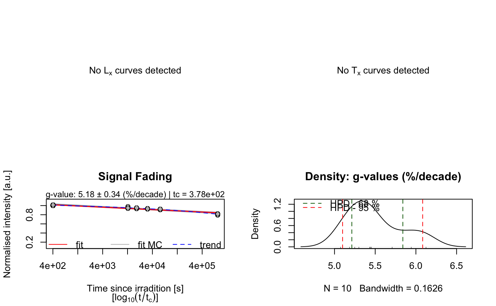

R/analyse_FadingMeasurement.R
analyse_FadingMeasurement.RdThe function analysis fading measurements and returns a fading rate including an error estimation. The function is not limited to standard fading measurements, as can be seen, e.g., Huntley and Lamothe (2001). Additionally, the density of recombination centres (rho') is estimated after Kars et al. (2008).
analyse_FadingMeasurement(
object,
structure = c("Lx", "Tx"),
signal.integral,
background.integral,
t_star = "half",
n.MC = 100,
verbose = TRUE,
plot = TRUE,
plot.single = FALSE,
...
)RLum.Analysis (required): input object with the measurement data. Alternatively, a list containing RLum.Analysis objects or a data.frame with three columns (x = LxTx, y = LxTx error, z = time since irradiation) can be provided. Can also be a wide table, i.e. a data.frame with a number of columns divisible by 3 and where each triplet has the before mentioned column structure.
Please note: The input object should solely consists of the curve needed for the data analysis, i.e. only IRSL curves representing Lx (and Tx)
If data from multiple aliquots are provided please see the details below with regard to Lx/Tx normalisation. The function assumes that all your measurements are related to one (comparable) sample. If you to treat independent samples, you have use this function in a loop.
character (with default):
sets the structure of the measurement data. Allowed are 'Lx' or c('Lx','Tx').
Other input is ignored
vector (required): vector with channels for the signal integral
(e.g., c(1:10)). Not required if a data.frame with LxTx values is provided.
vector (required): vector with channels for the background integral
(e.g., c(90:100)). Not required if a data.frame with LxTx values is provided.
character (with default):
method for calculating the time elapsed since irradiation if input is not a data.frame.
Options are: 'half' (the default), 'half_complex, which uses the long equation in Auclair et al. 2003, and
and 'end', which takes the time between irradiation and the measurement step.
Alternatively, t_star can be a function with one parameter which works on t1.
For more information see details.
t_star has no effect if the input is a data.frame, because this input comes
without irradiation times.
integer (with default): number for Monte Carlo runs for the error estimation
logical (with default): enables/disables verbose mode
logical (with default): enables/disables plot output
logical (with default):
enables/disables single plot mode, i.e. one plot window per plot.
Alternatively a vector specifying the plot to be drawn, e.g.,
plot.single = c(3,4) draws only the last two plots
(optional) further arguments that can be passed to internally used functions. Supported arguments:
xlab, log, mtext and xlim for the two first curve plots, and ylim for the fading
curve plot. For further plot customization please use the numerical output of the functions for
own plots.
An RLum.Results object is returned: Slot: @data
| OBJECT | TYPE | COMMENT |
fading_results | data.frame | results of the fading measurement in a table |
fit | lm | object returned by the used linear fitting function stats::lm |
rho_prime | data.frame | results of rho' estimation after Kars et al. (2008) |
LxTx_table | data.frame | Lx/Tx table, if curve data had been provided |
irr.times | integer | vector with the irradiation times in seconds |
Slot: @info
| OBJECT | TYPE | COMMENT |
call | call | the original function call |
All provided output corresponds to the \(tc\) value obtained by this analysis. Additionally in the output object the g-value normalised to 2-days is provided. The output of this function can be passed to the function calc_FadingCorr.
Fitting and error estimation
For the fitting the function stats::lm is used without applying weights. For the
error estimation all input values, except tc, as the precision can be considered as sufficiently
high enough with regard to the underlying problem, are sampled assuming a normal distribution
for each value with the value as the mean and the provided uncertainty as standard deviation.
The options for t_star
t_star = "half" (the default) The calculation follows the simplified
version in Auclair et al. (2003), which reads
$$t_{star} := t_1 + (t_2 - t_1)/2$$
t_star = "half_complex" This option applies the complex function shown in Auclair et al. (2003),
which is derived from Aitken (1985) appendix F, equations 9 and 11.
It reads $$t_{star} = t0 * 10^[(t_2 log(t_2/t_0) - t_1 log(t_1/t_0) - 0.43(t_2 - t_1))/(t_2 - t_1)]$$
where 0.43 = \(1/ln(10)\). t0, which is an arbitrary constant, is set to 1.
Please note that the equation in Auclair et al. (2003) is incorrect
insofar that it reads \(10exp(...)\), where the base should be 10 and not the Euler's number.
Here we use the correct version (base 10).
t_star = "end" This option uses the simplest possible form for t_star which is the time since
irradiation without taking into account any addition parameter and it equals t1 in Auclair et al. (2003)
t_star = <function> This last option allows you to provide an R function object that works on t1 and
gives you all possible freedom. For instance, you may want to define the following
function fun <- function(x) {x^2}, this would square all values of t1, because internally
it calls fun(t1). The name of the function does not matter.
Density of recombination centres
The density of recombination centres, expressed by the dimensionless variable rho', is estimated by fitting equation 5 in Kars et al. 2008 to the data. For the fitting the function stats::nls is used without applying weights. For the error estimation the same procedure as for the g-value is applied (see above).
Multiple aliquots & Lx/Tx normalisation
Be aware that this function will always normalise all Lx/Tx values by the Lx/Tx value of the
prompt measurement of the first aliquot. This implicitly assumes that there are no systematic
inter-aliquot variations in Lx/Tx values. If deemed necessary to normalise the Lx/Tx values
of each aliquot by its individual prompt measurement please do so before running
analyse_FadingMeasurement and provide the already normalised values for object instead.
0.1.21
Kreutzer, S., Burow, C., 2022. analyse_FadingMeasurement(): Analyse fading measurements and returns the fading rate per decade (g-value). Function version 0.1.21. In: Kreutzer, S., Burow, C., Dietze, M., Fuchs, M.C., Schmidt, C., Fischer, M., Friedrich, J., Mercier, N., Philippe, A., Riedesel, S., Autzen, M., Mittelstrass, D., Gray, H.J., Galharret, J., 2022. Luminescence: Comprehensive Luminescence Dating Data Analysis. R package version 0.9.17. https://CRAN.R-project.org/package=Luminescence
Aitken, M.J., 1985. Thermoluminescence dating, Studies in archaeological science. Academic Press, London, Orlando.
Auclair, M., Lamothe, M., Huot, S., 2003. Measurement of anomalous fading for feldspar IRSL using SAR. Radiation Measurements 37, 487-492. doi: 10.1016/S1350-4487(03)00018-0
Huntley, D.J., Lamothe, M., 2001. Ubiquity of anomalous fading in K-feldspars and the measurement
and correction for it in optical dating. Canadian Journal of Earth Sciences 38,
1093-1106. doi: 10.1139/cjes-38-7-1093
Kars, R.H., Wallinga, J., Cohen, K.M., 2008. A new approach towards anomalous fading correction for feldspar IRSL dating-tests on samples in field saturation. Radiation Measurements 43, 786-790. doi: 10.1016/j.radmeas.2008.01.021
## load example data (sample UNIL/NB123, see ?ExampleData.Fading)
data("ExampleData.Fading", envir = environment())
##(1) get fading measurement data (here a three column data.frame)
fading_data <- ExampleData.Fading$fading.data$IR50
##(2) run analysis
g_value <- analyse_FadingMeasurement(
fading_data,
plot = TRUE,
verbose = TRUE,
n.MC = 10)

#>
#> [analyse_FadingMeasurement()]
#>
#> n.MC: 10
#> tc: 3.78e+02 s
#> ---------------------------------------------------
#> T_0.5 interpolated: NA
#> T_0.5 predicted: 4e+11
#> g-value: 5.18 ± 0.34 (%/decade)
#> g-value (norm. 2 days): 6.01 ± 0.34 (%/decade)
#> ---------------------------------------------------
#> rho': 3.93e-06 ± 3.81e-07
#> log10(rho'): -5.41 ± 0.04
#> ---------------------------------------------------
##(3) this can be further used in the function
## to correct the age according to Huntley & Lamothe, 2001
results <- calc_FadingCorr(
age.faded = c(100,2),
g_value = g_value,
n.MC = 10)
#>
#>
#> [calc_FadingCorr()]
#>
#> >> Fading correction according to Huntley & Lamothe (2001)
#>
#> .. used g-value: 5.182 ± 0.337 %/decade
#> .. used tc: 1.198e-08 ka
#> .. used kappa: 0.0225 ± 0.0015
#> ----------------------------------------------
#> seed: NA
#> n.MC: 10
#> observations: 10
#> ----------------------------------------------
#> Age (faded): 100 ka ± 2 ka
#> Age (corr.): 203.0812 ka ± 13.4105 ka
#> ----------------------------------------------